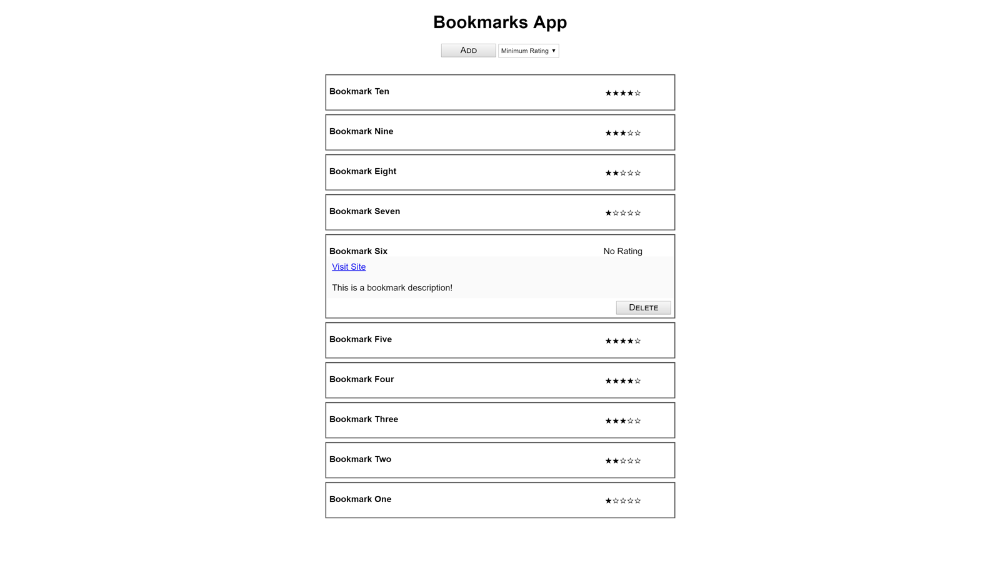

HI, I'M KEVIN
I'm a full stack developer.I was a game developer in my past life.
Image © Deus Ex
ABOUT

I thrive on identifying and engineering solutions, building applications that add value to product and pipeline, and attacking technical challenges with systematic precision. I see things beyond their face value and will frequently deep dive into how something works. My pursuit of clean, maintainable software architecture is evident in every work that I produce. My experience in team-based projects has given me the discipline to adhere to best practices within any stack, which not only enriches my collaborators' work, but also grants me the keen eye for detail that is required for succeeding in tech.
PROJECTS
BOOKMARKS APP
- HTML5
- CSS3
- jQuery
- AJAX
This is the very first front-end web application that I built, which allows users to create and delete bookmarks. With this project, I familiarized myself with fetching from RESTful API endpoints, re-rendering the page instead of directly manipulating the DOM, as well as modularizing code through IIFE's. Since this was a learning assignment, we used older techniques with jQuery in order to solidify our fundamentals before moving onto more modern workflows. I kept the design intentionally minimal to focus on the application architecture and functionality.